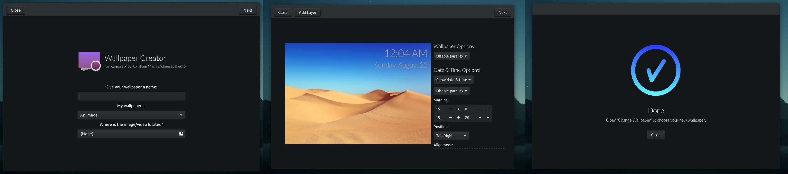

YAPB
It's a computer controlled players (bots) for the Counter-Strike b6.6 - 1.6 and Counter-Strike: Condition Zero. Bots allows you to play that games without connecting any game server or even without internet.

Komorebi
Komorebi is an awesome animated wallpapers manager for all Linux platforms. It provides fully customizeable image, video, and web page wallpapers that can be tweaked at any time!.